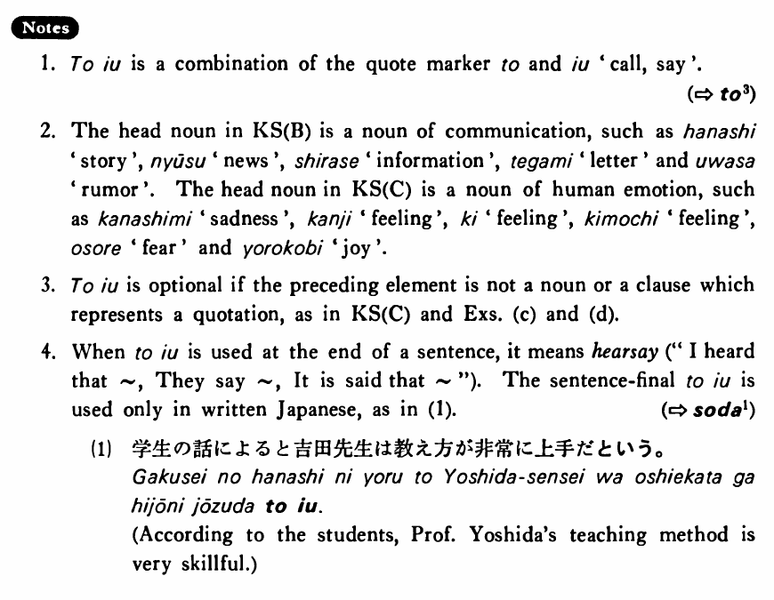

という (B. 486)
- (ksa).
- 「雪国」という小説を読んだ・読みました。
- I read a novel called Snow Country.
- (ksb).
- 山田さんが入院したという知らせを聞いた・聞きました。
- I heard the news that Mr. Yamada has been hospitalised.
- (ksc).
- もっと頑張らなくては（ならない）という気持ちがある・あります。
- I have the feeling that I have to keep hanging in there.
- (a).
- 「七人の侍」という映画を見たことがありますか。
- Have you ever seen the film called Seven Samurai?
- (b).
- ジューンが日本へ行くという話は本当ですか。
- Is the story that June is going to Japan true?
- (c).
- その人に会いたくないという気持ちはよく分かります。
- I am well aware of your feeling that you don't want to see him.
- (d).
- 友達が今日来るということをすっかり忘れていた。
- I completely forgot the fact that my friend is coming today.
